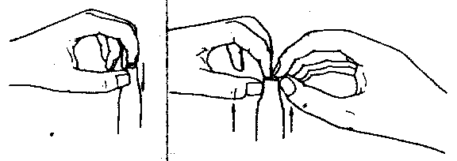

THE CIRCUMCISION REFERENCE LIBRARY
To the editor:
In the Paediatric Casualty Department at the Johannesburg Hospital we frequently see children with torn foreskins caused by forcing the foreskin back over the glans penis. The damage is most often done by clinic sisters, but I regret to say that it is sometimes caused by general practitioners who seem to be unaware of the normal development of the foreskin.
The normal foreskin will in the normal course of events dilate sufficiently to slip over the head of the penis by 5 or 6 years of age. [CIRP note: The previous statement is not completely accurate. Later studies show that many boys do not achieve full retractability of their prepuce until after puberty.] It does not require anyone's help to do this. The head of the penis does not require cleaning. Nature does the job very efficiently by means of natural secretions. The white material which collects under the foreskin is not dirt or pus but good healthy epithelial debris which will slowly but surely separate the adherent foreskin from the glans better than any nurse or doctor should do it.
Lastly, a lot of infants are diagnosed as having phimosis because of incorrect technique in examining the penis. The foreskin should not be pushed back over the penis in babies, as this makes the opening look smaller than it is. It should be lifted up as in Fig. 1, and the opening will usually be found big enough to drop a football in (well, almost!).
|  | |
|---|---|
| Incorrect Method If foreskin is pushed downward it makes the opening look smaller. |
Correct method If foreskin is grasped with both index fingers and thumbs and pulled upward the true size of the opening is apparent. |
Fig 1. Examination of the foreskin for phimosis.[1] |
|
It is a good rule that is a baby passes a good stream of urine without causing ballooning of the foreskin, then that foreskin is entirely normal. [CIRP note: Ballooning of the foreskin now (2006) is considered to be a sign that separation of the foreskin from the underlying glans penis is proceeding normally. It is not a cause for concern. Ballooning is a normal stage of development. Ballooning will stop when the opening of the foreskin enlarges with normal growth and development over a period of time.]
Will nurses and doctors please take note?
P. Catzel
Principal Paediatrician
Paediatric Casualty Department
Johannesburg Hospital
Johannesburg
http://www.cirp.org/library/normal/catzel/